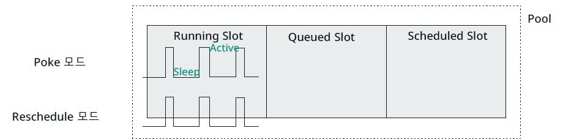
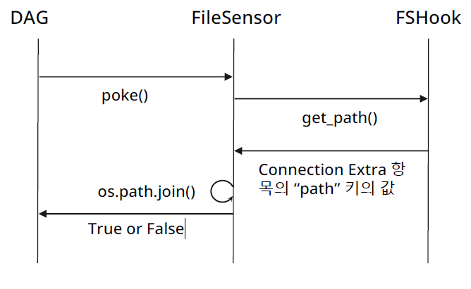

Template Variabler
DAG Creation, Bash Operator, Task Performance Subject,
template
Kwangmin Kim
May 1, 2023
- 일종의 특화된 오퍼레이터
- 특정 조건이 만족되기를 주기적으로 확인 및 기다리고 만족되면 True를 반환하는 Task
- 모든 센서는 BaseSensorOperator를 상속하여 구현되며 (BaseSensorOperator는 BaseOperator를 상속함) 상속시에는 init() 함수와 poke(context) 함수 재정의 해야한다
- 센싱하는 로직은 poke 함수에 정의: 특정 조건이 만족하는지 체크하고 true를 return 하도록 정의
Bases: airflow.models.baseoperator.BaseOperator, airflow.models.skipmixin.SkipMixin Sensor operators are derived from this class and inherit these attributes. Sensor operators keep executing at a time interval and succeed when a criteria is met and fail if and when they time out.
parameter
- poke_interval (float) – Time in seconds that the job should wait in between each try: 특정 조건이 만족하는지 체크하는 주기로 초단위로 입력하면 된다. 60 = 1mins
- timeout (float) – Time, in seconds before the task times out and fails. task가 계속 false 가 나올때 task failure 로 규정할 maximum 시간 초단위로 입력. 보통 daily dag을 많이 만드므로 timeout도 보통 24시간 으로 입력한다. ex) 606024
- soft_fail (bool) – Set to true to mark the task as SKIPPED on failure. timeout을 만났을 때 sensor task fail로 marking하지 말고 skip으로 marking하도록 설정
- mode (str) (중요) – How the sensor operates. Options are: { poke | reschedule }, default is poke. When set to poke the sensor is taking up a worker slot for its whole execution time and sleeps between pokes. Use this mode if the expected runtime of the sensor is short or if a short poke interval is required. Note that the sensor will hold onto a worker slot and a pool slot for the duration of the sensor’s runtime in this mode. When set to reschedule the sensor task frees the worker slot when the criteria is not yet met and it’s rescheduled at a later time. Use this mode if the time before the criteria is met is expected to be quite long. The poke interval should be more than one minute to prevent too much load on the scheduler.
- exponential_backoff (bool) – allow progressive longer waits between pokes by using exponential backoff algorithm. sensor task를 체크하는 주기가 \(2^n\) 으로 늘어지기 된다. 즉, 2초, 4초, 8초, \(\ldots\)
- max_wait (datetime.timedelta | float | None) – maximum wait interval between pokes, can be timedelta or float seconds. exponential_backoff가 true 일 때 홠성화 되며 exponential_backoff 의 상한선을 의미
- silent_fail (bool) – If true, and poke method raises an exception different from AirflowSensorTimeout, AirflowTaskTimeout, AirflowSkipException and AirflowFailException, the sensor will log the error and continue its execution. Otherwise, the sensor task fails, and it can be retried based on the provided retries parameter.
poke(context)[source]: Function defined by the sensors while deriving this class should override.재정의 하지 않으면 error 발생
execute(self, context: Context): 재정의할 필요없음. 이미 정의가 되어 있음
[docs] def execute(self, context: Context) -> Any: started_at: datetime.datetime | float (...) while True: try: poke_return = self.poke(context) except ( AirflowSensorTimeout, AirflowTaskTimeout, AirflowSkipException, AirflowFailException, ) as e: raise e except Exception as e: if self.silent_fail: logging.error("Sensor poke failed: \n %s", traceback.format_exc()) poke_return = False else: raise e if poke_return: # poke_return = true이면 while loop 탈출 if isinstance(poke_return, PokeReturnValue): xcom_value = poke_return.xcom_value break (...)BaseSensor 오퍼레이터 Mode 유형
- mode 유형
Comparison Poke Mode Reschedule Mode 원리 DAG이 수행되는 내내 Running Slot(task가 수행될 때 차지하는 공간) 을 차지. sensor가 특정 조건을 체킹할때나 안할때나 항상 slot 차지. 다만 Slot 안에서 Sleep, active 를 반복 센서가 조건을 체킹하는 동작 시기에만 Slot을 차지. 그 외에는 Slot을 점유하지 않음 Wait에서의 Task 상태 running (airflow web ui 에서 task bar가 연두색) up_for_reschedule (task bar가 민트색) 유리한 적용 시점 짧은 센싱 간격 (interval, 초 단위) 긴 센싱 간격, 주로 분 단위 Reschedule될 때 (5분, 10분) 스케줄러의 부하 발생 Slot의 이해
- Pool
- 모든 operator로 만들어진 Task는 특정 Pool에서 수행되며 Pool은 Slot이라는 것을 가지고 있음.
- 기본적으로 Task 1개당 Slot 1개를 점유하며 Pool을 지정하지 않으면 default_pool에서 수행 
- airflow web ui >> admin >> pools
- pool: pool name
- slots: 128개의 공간
- Running Slots, Queued Slots, Schedulued Slots.
- Pool
사용자 입장에서는 operator의 mode의 이해는 그렇게 중요하진 않지만 airflow를 운영하는 사람 입장에서는 중요한 변수가 될 수 있다.
- airflow.sensors.bash
- Parameters
- bash_command – 조건문을 여기에다가 적음
- Return True if and only if the return code is 0.
- shell 스크립트에서 return True를 주는 방법
- 파이썬에서의 return True와 같은 의미로 쉘 스크립트에서는 exit 0 를 사용
- 모든 쉘은 수행을 마친 후 EXIT_STATUS를 가지고 있으며 0~255 사이의 값을 가짐.
- EXIT 0 만 정상이며 나머지는 모두 비정상의 의미를 가짐
- 마지막 명령 수행의 EXIT_STATUS를 확인하려면
echo $?로 확인
kmkim@K100230201051:~/airflow$ ls airflow custom_image docker-compose.20230708 files plugins config dags docker-compose.yaml logs kmkim@K100230201051:~/airflow$ echo $? 0 kmkim@K100230201051:~/airflow$ ls sdf ls: cannot access 'sdf': No such file or directory kmkim@K100230201051:~/airflow$ echo $? 2 kmkim@K100230201051:~/airflow$ sdfsd sdfsd: command not found kmkim@K100230201051:~/airflow$ echo $? 127 - exit status 변경하기
- env – If env is not None, it must be a mapping that defines the environment variables for the new process; these are used instead of inheriting the current process environment, which is the default behavior. (templated)
- output_encoding – output encoding of bash command.
- retry_exit_code (int | None) – If task exits with this code, treat the sensor as not-yet-complete and retry the check later according to the usual retry/timeout settings. Any other non-zero return code will be treated as an error, and cause the sensor to fail. If set to None (the default), any non-zero exit code will cause a retry and the task will never raise an error except on time-out.
- bash_command – 조건문을 여기에다가 적음
- Parameters
- Dag Example
- csv file 있는지 없는지 확인
-
- Waits for a file or folder to land in a filesystem. (file이나 folder가 시스템안에 들어왔는지 체크)
- Parameters
- fs_conn_id – reference to the File (path) connection id (file connection id을 airflow web에 미리 등록해놔야함)
- filepath – File or folder name (relative to the base path set within the connection), can be a glob.
- recursive – when set to True, enables recursive directory matching behavior of ** in glob filepath parameter. Defaults to False. (glob(**))
- 구체적인 로직을 이해하기 위해 source를 봐야함
- 모든 sensor를 만들때는 poke를 재정의해야만 함.
- 즉, poke만 잘 이해하면 거의 모든 sensor를 잘 이해할 수 있다.
- poke()의 FSHook() 은 imported from airflow.hooks.filesystem
- hook = FSHook(self.fs_conn_id): hook을 만들 때 fs_conn_id를 넘겨받고 있음
- glob()을 이해하는 것이 핵심
- file path안에 있는 files 또는 directories를 list로 반환
glob('/home/kmkim') # 이 path 안에 있는 모든 files, directories이 리스트로 반환됨 glob('/home/kmkim/docker-compose.yaml') # docker-compose.yaml 자체가 리스트로 반환됨 glob('/home/kmkim/**', recursive=True) # /home/kmkim/ 하위에 있는 모든 files 또는 directories이 리스트로 반환됨- 주로 file을 찾기 위해 사용되는 함수이기 때문에 glob(‘/home/kmkim/docker-compose.yaml’) 이 형태가 가장 많이 사용된다.
from __future__ import annotations import datetime import os from glob import glob from typing import Sequence from airflow.hooks.filesystem import FSHook from airflow.sensors.base import BaseSensorOperator from airflow.utils.context import Context [docs]class FileSensor(BaseSensorOperator): """ Waits for a file or folder to land in a filesystem. If the path given is a directory then this sensor will only return true if any files exist inside it (either directly, or within a subdirectory) :param fs_conn_id: reference to the File (path) connection id :param filepath: File or folder name (relative to the base path set within the connection), can be a glob. :param recursive: when set to ``True``, enables recursive directory matching behavior of ``**`` in glob filepath parameter. Defaults to ``False``. .. seealso:: For more information on how to use this sensor, take a look at the guide: :ref:`howto/operator:FileSensor` """ [docs] template_fields: Sequence[str] = ("filepath",) [docs] ui_color = "#91818a" def __init__(self, *, filepath, fs_conn_id="fs_default", recursive=False, **kwargs): super().__init__(**kwargs) self.filepath = filepath self.fs_conn_id = fs_conn_id self.recursive = recursive [docs] def poke(self, context: Context): hook = FSHook(self.fs_conn_id) basepath = hook.get_path() # hook이 가지고 있는 method full_path = os.path.join(basepath, self.filepath) self.log.info("Poking for file %s", full_path) for path in glob(full_path, recursive=self.recursive): if os.path.isfile(path): # glob에 의한 결과물이 file이면 for loop 탈출 mod_time = datetime.datetime.fromtimestamp(os.path.getmtime(path)).strftime("%Y%m%d%H%M%S") self.log.info("Found File %s last modified: %s", str(path), mod_time) return True for _, _, files in os.walk(path): if len(files) > 0: return True return Falseglob: file path안에 있는 file이나 directory를 찾아서 list로 반환
glob('/home/kmkim'): 모든 files and directories list 반환glob('/home/kmkim/docker-compose.yaml'): docker-compose.yaml만 리스트로 반환glob('/home/kmkim/**',recursive=True): 하위 디렉토리 안에 있는 파일과 디렉토리들의 리스트로 반환
FSHook(): 명세서[docs]class FSHook(BaseHook): """ Allows for interaction with an file server. Connection should have a name and a path specified under extra: example: Connection Id: fs_test Connection Type: File (path) Host, Schema, Login, Password, Port: empty Extra: {"path": "/tmp"} # dictionary 형태 """ def __init__(self, conn_id: str = "fs_default"): super().__init__() conn = self.get_connection(conn_id) self.basepath = conn.extra_dejson.get("path", "") self.conn = conn [docs] def get_conn(self) -> None: pass [docs] def get_path(self) -> str: """ Get the path to the filesystem location. :return: the path. """ return self.basepath- get_path(): self.baspath return - 별 내용 없음
- 생성자만 잘 이해하면 됨
- Connection should have a name and a path specified under extra (예시 잘 볼 것): 
Connection 작성
Connection_id conn_file_opt_airflow_files Connection_type File (path) Host Schema Login Password Port Extra {“path”:“/opt/airflow/files”} Dag 작성
- airflow.sensors.python 명세서 보기
- python operator와 매우 유사: 다른점은 python collabe function의 return값이 반드시 true로 되어야함
- 무엇을 센싱할 것인가
- 서울시 공공데이터에서 당일 날짜로 데이터가 생성되었는지 센싱하기(날짜 컬럼이 있는 경우)
- 당일 날짜가 몇시에 업로드가 되는지 모름 (12시? ,00시, 1시?)
- 서울 열린 데이터 광장
- 검색창 >> ‘코로나’ 검색 >> 서울시 코로나19 확진자 발생동향 (2023.05.31.이전) >> 미리보기
- 목표: 센서를 공용적으로 만들어 다른 dataset에도 적용할 수 있도록 작성
- python collable function(check_api_update())을 일반화 시켜서 작성 ```markdown from airflow import DAG from airflow.sensors.python import PythonSensor import pendulum from airflow.hooks.base import BaseHook
- ExternalTask dag: dags_external_task_sensor.py
- 어떤 센서를 만들 것인가?
- Python 센서에서 만들었던 로직을 Custom Sensor화 하기 (서울시 공공데이터에서 날짜 컬럼이 있는 경우 날짜 기준 update되었는지 센싱)
- 재활용성이 높아 다른 DAG에서 활용될 가능성이 높다면 가급적이면 Custom 오퍼레이터화 해놓는 것이 좋다. (협업 환경에서 코드 중복 구현의 방지, 로직의 일원화 등)
1 센서
1.1 센서의 개념
1.2 BaseSensor 오퍼레이터 명세 확인
2 Bash Sensor
2.1 Bash 센서 명세 확인
from airflow.sensors.bash import BashSensor
from airflow.operators.bash import BashOperator
from airflow import DAG
import pendulum
with DAG(
dag_id='dags_bash_sensor',
start_date=pendulum.datetime(2023,4,1, tz='Asia/Seoul'),
schedule='0 6 * * *',
catchup=False
) as dag:
sensor_task_by_poke = BashSensor(
task_id='sensor_task_by_poke',
# 오늘 날짜로 tvCorona19VaccinestatNew.csv 가 있는지 없는지 확인
env={'FILE':'/opt/airflow/files/tvCorona19VaccinestatNew/{{data_interval_end.in_timezone("Asia/Seoul") | ds_nodash }}/tvCorona19VaccinestatNew.csv'},
bash_command=f'''echo $FILE &&
if [ -f $FILE ]; then
exit 0
else
exit 1
fi''',
poke_interval=30, #30초
timeout=60*2, #2분
mode='poke',
soft_fail=False
)
sensor_task_by_reschedule = BashSensor(
task_id='sensor_task_by_reschedule',
env={'FILE':'/opt/airflow/files/tvCorona19VaccinestatNew/{{data_interval_end.in_timezone("Asia/Seoul") | ds_nodash }}/tvCorona19VaccinestatNew.csv'},
bash_command=f'''echo $FILE &&
if [ -f $FILE ]; then
exit 0
else
exit 1
fi''',
poke_interval=60*3, # 3분
timeout=60*9, #9분
mode='reschedule',
soft_fail=True
)
bash_task = BashOperator(
task_id='bash_task',
env={'FILE': '/opt/airflow/files/tvCorona19VaccinestatNew/{{data_interval_end.in_timezone("Asia/Seoul") | ds_nodash }}/tvCorona19VaccinestatNew.csv'},
bash_command='echo "건수: `cat $FILE | wc -l`"',
)
[sensor_task_by_poke,sensor_task_by_reschedule] >> bash_task3 File Sensor
3.1 File 센서 명세 확인
from airflow import DAG
from airflow.sensors.filesystem import FileSensor
import pendulum
with DAG(
dag_id='dags_file_sensor',
start_date=pendulum.datetime(2023,4,1, tz='Asia/Seoul'),
schedule='0 7 * * *',
catchup=False
) as dag:
tvCorona19VaccinestatNew_sensor = FileSensor(
task_id='tvCorona19VaccinestatNew_sensor',
fs_conn_id='conn_file_opt_airflow_files',
filepath='tvCorona19VaccinestatNew/{{data_interval_end.in_timezone("Asia/Seoul") | ds_nodash }}/tvCorona19VaccinestatNew.csv',
recursive=False,
poke_interval=60,
timeout=60*60*24, # 1일
mode='reschedule'
)4 Python Sensor
classairflow.sensors.python.PythonSensor(*, python_callable, op_args=None, op_kwargs=None, templates_dict=None, **kwargs)[source]
Bases: airflow.sensors.base.BaseSensorOperator
Waits for a Python callable to return True.
User could put input argument in templates_dict e.g templates_dict = {'start_ds': 1970} and access the argument by calling kwargs['templates_dict']['start_ds'] in the callable
Parameters
* python_callable (Callable) – A reference to an object that is callable
* op_kwargs (Mapping[str, Any] | None) – a dictionary of keyword arguments that will get unpacked in your function
* op_args (list | None) – a list of positional arguments that will get unpacked when calling your callable
* templates_dict (dict | None) – a dictionary where the values are templates that will get templated by the Airflow engine sometime between __init__ and execute takes place and are made available in your callable’s context after the template has been applied.4.1 Python 센서 DAG 작성
with DAG( dag_id=‘dags_python_sensor’, start_date=pendulum.datetime(2023,4,1, tz=‘Asia/Seoul’), schedule=’10 1 * * *’, catchup=False ) as dag: def check_api_update(http_conn_id, endpoint, base_dt_col, **kwargs): import requests import json from dateutil import relativedelta connection = BaseHook.get_connection(http_conn_id) url = f’http://{connection.host}:{connection.port}/{endpoint}/1/100’ #1부터 100행 까지만 가지고옴 response = requests.get(url)
contents = json.loads(response.text)
key_nm = list(contents.keys())[0]
row_data = contents.get(key_nm).get('row')
# row_data에 list형태로 데이터가 들어감
# [{1행},
{2행},
{3행},
{4행},...]
last_dt = row_data[0].get(base_dt_col) #row_data의 첫번째 행, base_dt_col의 key에 대한 value를 추출
last_date = last_dt[:10]
# 열번째 글자 까지만 slicing
# 왜냐면, 서울시 기준일(S_DT)가 date 형식이 아니라 string 형식으로 입력되어 있음
# 연/월/일 정보만 필요하기 때문에 시간은 제외
last_date = last_date.replace('.', '-').replace('/', '-')
# 밑에 try구문은 last_date 의 data 검증
try:
pendulum.from_format(last_date,'YYYY-MM-DD')
except:
from airflow.exceptions import AirflowException
AirflowException(f'{base_dt_col} 컬럼은 YYYY.MM.DD 또는 YYYY/MM/DD 형태가 아닙니다.')
# 서울시 코로나19 확진자 발생동향 (2023.05.31.이전) 의 데이텉 명세에 따르면
# S_DT: 서울시 기준일 (데이터 기준일) 을 의미
today_ymd = kwargs.get('data_interval_end').in_timezone('Asia/Seoul').strftime('%Y-%m-%d')
# time stamp를 string형태로 바꿈
# today_ymd는 batch(DAG)가 도는 날짜
if last_date >= today_ymd: # string 형태지만 크기는 비교 가능
print(f'생성 확인(배치 날짜: {today_ymd} / API Last 날짜: {last_date})')
return True
else:
print(f'Update 미완료 (배치 날짜: {today_ymd} / API Last 날짜:{last_date})')
return False
sensor_task = PythonSensor(
task_id='sensor_task',
python_callable=check_api_update,
op_kwargs={'http_conn_id':'openapi.seoul.go.kr',
'endpoint':'{{var.value.apikey_openapi_seoul_go_kr}}/json/TbCorona19CountStatus',
'base_dt_col':'S_DT'},
poke_interval=600, #10분
mode='reschedule'
)
# ExternalTask 센서
## DAG 간 의존관계 설정
* DAG 의존관계 설정 방법
* TriggerDagRun 오퍼레이터
:::{.cell}
:::{.cell-output-display}
:::{}
:::{}
<svg width="672" height="480" viewbox="0.00 0.00 189.55 209.00" xmlns="http://www.w3.org/2000/svg" xlink="http://www.w3.org/1999/xlink" style="; max-width: none; max-height: none">
<g id="graph0" class="graph" transform="scale(1 1) rotate(0) translate(4 205)">
<title>G</title>
<polygon fill="white" stroke="transparent" points="-4,4 -4,-205 185.55,-205 185.55,4 -4,4"></polygon>
<g id="clust1" class="cluster">
<title>cluster0</title>
<polygon fill="none" stroke="black" points="8,-8 8,-193 173.55,-193 173.55,-8 8,-8"></polygon>
<text text-anchor="middle" x="90.78" y="-176.4" font-family="Times,serif" font-size="14.00">Task Flow</text>
</g>
<!-- task1 -->
<g id="node1" class="node">
<title>task1</title>
<polygon fill="none" stroke="black" points="70,-106 16,-106 16,-70 70,-70 70,-106"></polygon>
<text text-anchor="middle" x="43" y="-83.8" font-family="Times,serif" font-size="14.00">task1</text>
</g>
<!-- task2_1 -->
<g id="node2" class="node">
<title>task2_1</title>
<polygon fill="none" stroke="black" points="165.33,-52 106.22,-52 106.22,-16 165.33,-16 165.33,-52"></polygon>
<text text-anchor="middle" x="135.78" y="-29.8" font-family="Times,serif" font-size="14.00">task2_1</text>
</g>
<!-- task1->task2_1 -->
<g id="edge1" class="edge">
<title>task1->task2_1</title>
<path fill="none" stroke="black" d="M70.26,-72.38C78.66,-67.38 88.14,-61.74 97.18,-56.36"></path>
<polygon fill="black" stroke="black" points="99.23,-59.22 106.04,-51.1 95.65,-53.2 99.23,-59.22"></polygon>
</g>
<!-- task2_2 -->
<g id="node3" class="node">
<title>task2_2</title>
<polygon fill="none" stroke="black" points="165.33,-106 106.22,-106 106.22,-70 165.33,-70 165.33,-106"></polygon>
<text text-anchor="middle" x="135.78" y="-83.8" font-family="Times,serif" font-size="14.00">task2_2</text>
</g>
<!-- task1->task2_2 -->
<g id="edge2" class="edge">
<title>task1->task2_2</title>
<path fill="none" stroke="black" d="M70.26,-88C78.22,-88 87.15,-88 95.77,-88"></path>
<polygon fill="black" stroke="black" points="96.04,-91.5 106.04,-88 96.04,-84.5 96.04,-91.5"></polygon>
</g>
<!-- task2_3 -->
<g id="node4" class="node">
<title>task2_3</title>
<polygon fill="none" stroke="black" points="165.33,-160 106.22,-160 106.22,-124 165.33,-124 165.33,-160"></polygon>
<text text-anchor="middle" x="135.78" y="-137.8" font-family="Times,serif" font-size="14.00">task2_3</text>
</g>
<!-- task1->task2_3 -->
<g id="edge3" class="edge">
<title>task1->task2_3</title>
<path fill="none" stroke="black" d="M70.26,-103.62C78.66,-108.62 88.14,-114.26 97.18,-119.64"></path>
<polygon fill="black" stroke="black" points="95.65,-122.8 106.04,-124.9 99.23,-116.78 95.65,-122.8"></polygon>
</g>
</g>
</svg>
:::
:::
:::
:::
* task1: PythonOperator
* TriggerDagRun Operator: task1이 끝난 후 다른 dag을 돌리고 싶을 경우에 TriggerDagRun Operator사용. task2,3,4는 task1 후에 돌아가는 task로 triggerDagRun Operator에 의해 task2,3,4에 대응되는 각 각 다른 dag을 돌아가도록 수행된다.
* ExternalTask 센서
:::{.cell}
:::{.cell-output-display}
:::{}
:::{}
<svg width="672" height="480" viewbox="0.00 0.00 188.77 263.00" xmlns="http://www.w3.org/2000/svg" xlink="http://www.w3.org/1999/xlink" style="; max-width: none; max-height: none">
<g id="graph0" class="graph" transform="scale(1 1) rotate(0) translate(4 259)">
<title>G</title>
<polygon fill="white" stroke="transparent" points="-4,4 -4,-259 184.77,-259 184.77,4 -4,4"></polygon>
<g id="clust1" class="cluster">
<title>cluster0</title>
<polygon fill="none" stroke="black" points="8,-8 8,-247 172.77,-247 172.77,-8 8,-8"></polygon>
<text text-anchor="middle" x="90.39" y="-230.4" font-family="Times,serif" font-size="14.00">Task Flow</text>
</g>
<!-- sensor1 -->
<g id="node1" class="node">
<title>sensor1</title>
<polygon fill="none" stroke="black" points="74.66,-214 16.11,-214 16.11,-178 74.66,-178 74.66,-214"></polygon>
<text text-anchor="middle" x="45.39" y="-191.8" font-family="Times,serif" font-size="14.00">sensor1</text>
</g>
<!-- task2 -->
<g id="node5" class="node">
<title>task2</title>
<polygon fill="none" stroke="black" points="164.77,-133 110.77,-133 110.77,-97 164.77,-97 164.77,-133"></polygon>
<text text-anchor="middle" x="137.77" y="-110.8" font-family="Times,serif" font-size="14.00">task2</text>
</g>
<!-- sensor1->task2 -->
<g id="edge1" class="edge">
<title>sensor1->task2</title>
<path fill="none" stroke="black" d="M66.9,-177.62C79.35,-166.46 95.41,-152.07 108.99,-139.9"></path>
<polygon fill="black" stroke="black" points="111.54,-142.31 116.65,-133.03 106.87,-137.1 111.54,-142.31"></polygon>
</g>
<!-- sensor2 -->
<g id="node2" class="node">
<title>sensor2</title>
<polygon fill="none" stroke="black" points="74.66,-160 16.11,-160 16.11,-124 74.66,-124 74.66,-160"></polygon>
<text text-anchor="middle" x="45.39" y="-137.8" font-family="Times,serif" font-size="14.00">sensor2</text>
</g>
<!-- sensor2->task2 -->
<g id="edge2" class="edge">
<title>sensor2->task2</title>
<path fill="none" stroke="black" d="M74.98,-133.46C83.16,-131.01 92.18,-128.32 100.75,-125.76"></path>
<polygon fill="black" stroke="black" points="101.93,-129.06 110.51,-122.85 99.92,-122.35 101.93,-129.06"></polygon>
</g>
<!-- sensor3 -->
<g id="node3" class="node">
<title>sensor3</title>
<polygon fill="none" stroke="black" points="74.66,-106 16.11,-106 16.11,-70 74.66,-70 74.66,-106"></polygon>
<text text-anchor="middle" x="45.39" y="-83.8" font-family="Times,serif" font-size="14.00">sensor3</text>
</g>
<!-- sensor3->task2 -->
<g id="edge3" class="edge">
<title>sensor3->task2</title>
<path fill="none" stroke="black" d="M74.98,-96.54C83.16,-98.99 92.18,-101.68 100.75,-104.24"></path>
<polygon fill="black" stroke="black" points="99.92,-107.65 110.51,-107.15 101.93,-100.94 99.92,-107.65"></polygon>
</g>
<!-- sensor4 -->
<g id="node4" class="node">
<title>sensor4</title>
<polygon fill="none" stroke="black" points="74.66,-52 16.11,-52 16.11,-16 74.66,-16 74.66,-52"></polygon>
<text text-anchor="middle" x="45.39" y="-29.8" font-family="Times,serif" font-size="14.00">sensor4</text>
</g>
<!-- sensor4->task2 -->
<g id="edge4" class="edge">
<title>sensor4->task2</title>
<path fill="none" stroke="black" d="M66.9,-52.38C79.35,-63.54 95.41,-77.93 108.99,-90.1"></path>
<polygon fill="black" stroke="black" points="106.87,-92.9 116.65,-96.97 111.54,-87.69 106.87,-92.9"></polygon>
</g>
</g>
</svg>
:::
:::
:::
:::
* task2를 돌리기 위해 다른 dag의 task가 완료된 후에 돌아가야 하는 조건이 붙었을 때 사용
* 예를 들어, 위의 그림 처럼, sensor1는 Dag A, sensor2는 Dag B, sensor3은 Dag C, sensor3은 Dag D에 속해있다고 할 때, 4개의 dag이 완료가 되어야 task2가 돌아갈 수 있다.
* dataset
* airflow 2.4 version에 나온 기능으로 dag의 dependency를 설정하는 새로운 방법
## ExternalTask 센서 명세 확인
* [airflow.sensors.external_task 명세](https://airflow.apache.org/docs/apache-airflow/stable/_api/airflow/sensors/external_task/index.html#module-airflow.sensors.external_task)
* Bases: airflow.sensors.base.BaseSensorOperator
* Waits for a different DAG, task group, or task to complete for a specific logical date.
* Parameter
| Parameter | 필수여부 | 설명 |
|-----------------|-----------------|:------------------------------|
| external_dag_id | O | 센싱할 dag 명 |
| **external_task_id** | X (셋 중 하나만 입력 가능 없으면 안써도 되고 없을 경우 dag만 센싱) | 센싱할 task_id 명 (string) |
| **external_task_ids** | X (셋 중 하나만 입력 가능 없으면 안써도 되고 없을 경우 dag만 센싱) | 센싱할 1 개 이상의 task_id 명 (list) |
| **external_task_group_id** | X (셋 중 하나만 입력 가능 없으면 dag만 센싱) | 센싱할 task_group_id명 |
| allowed_states | X (같은 상태가 입력되면 안됨) | 센서가 Success 되기 위한 센싱 대상의 상태 (기본적으로 센싱할 task가 success로 끝나야함) |
| skipped_states | X (같은 상태가 입력되면 안됨) | 센서가 Skipped 되기 위한 센싱 대상의 상태 (기본적으로 none, 아무런 정의가 안되어있음) |
| failed_states | X (같은 상태가 입력되면 안됨) | 센서가 Fail 되기 위한 센싱 대상의 상태 (기본적으로 none, 아무런 정의가 안되어있음) |
| execution_delta | Login | 현재 dag과 센싱할 dag의 data_interval_start의 차이 (스케쥴 차이)를 입력 |
| execution_date_fn | Password | 스케쥴 차이를 상수로 구할 수 없는 경우, 센싱할 dag의 data_interval_start를 구하기 위한 함수를 넣어주면 됨 |
| check_existence | Password | sensidng dag의 dag_id 또는 task_id 가 있는지 확인 true or false로 입력해야한다. default=false |
* 위의 allowed_states, skipped_states, failed_states의 states 적을 수 있는 항목은 airflow.utils.state import State (State class) 에 있는 member들만 적을 수 있다.
* State.SKIPPED, State.SUCCESS, State.FAILED, State.QUEUED, State.SCHEDULED, State.UP_FOR_RESCHEDULE 등
(from airflow.utils.state import State 필요)
* 위의 execution_delta 에는 timedelta() 를 이용하여 입력.
* External Task가 있는 dag보다 센싱할 dag이 얼마나 과거에 있는지 양수로 입력
* 예를 들어, 센싱할 dag이 6시간 앞선다면 timedelta(hours=6)으로 입력. 주의) -6으로 쓰면 안됨
* execution_date_fn의 경우 함수가 들어가게 되는데 주로 주 dag의 주기가 다를 때 사용한다.
* 예를 들어, externalTask의 dag이 시간단위 스케쥴이고 센싱할 dag의 스케쥴이 월단위로 적혀 있을때, data_interval_schedule값이 점점 벌어지게 된다.
* 센싱할 dag의 스케쥴: dag(0 1 1 * *)
* external task의 dag의 스케쥴 : dag(0 7 * * *)
* data_interval_schedule = 6h (1일차), 1d+6h(2일차), 2d+6h(3일차), $\ldots$
* **가장 빈번하게 쓰이고 중요한 parameter: external_dag_id와 execution_delta**
## Dag Full Example
* Monitoring or sensing 할 dag: dags_branch_python_operator.py
```markdown
from airflow import DAG
import pendulum
from airflow.operators.python import PythonOperator
from airflow.operators.python import BranchPythonOperator
with DAG(
dag_id='dags_branch_python_operator',
start_date=pendulum.datetime(2023,4,1, tz='Asia/Seoul'),
schedule='0 1 * * *',
catchup=False
) as dag:
def select_random():
import random
item_lst = ['A','B','C']
selected_item = random.choice(item_lst)
if selected_item == 'A':
return 'task_a' # task_id를 string 값으로 return해야함
elif selected_item in ['B','C']:
return ['task_b','task_c'] # 여러 task를 동시에 수행시킬 땐 리스트로 반환
# 일반 operator의 parameter도 있음
python_branch_task = BranchPythonOperator(
task_id='python_branch_task',
python_callable=select_random
)
# 후행 task 3개
def common_func(**kwargs):
print(kwargs['selected'])
task_a = PythonOperator(
task_id='task_a',
python_callable=common_func,
op_kwargs={'selected':'A'}
)
task_b = PythonOperator(
task_id='task_b',
python_callable=common_func,
op_kwargs={'selected':'B'}
)
task_c = PythonOperator(
task_id='task_c',
python_callable=common_func,
op_kwargs={'selected':'C'}
)
python_branch_task >> [task_a, task_b, task_c]from airflow import DAG
from airflow.sensors.external_task import ExternalTaskSensor
import pendulum
from datetime import timedelta
from airflow.utils.state import State
with DAG(
dag_id='dags_external_task_sensor',
start_date=pendulum.datetime(2023,4,1, tz='Asia/Seoul'),
schedule='0 7 * * *',
catchup=False
) as dag:
external_task_sensor_a = ExternalTaskSensor(
task_id='external_task_sensor_a',
external_dag_id='dags_branch_python_operator',
external_task_id='task_a',
allowed_states=[State.SKIPPED],
execution_delta=timedelta(hours=6),
poke_interval=10 #10초
)
external_task_sensor_b = ExternalTaskSensor(
task_id='external_task_sensor_b',
external_dag_id='dags_branch_python_operator',
external_task_id='task_b',
failed_states=[State.SKIPPED],
execution_delta=timedelta(hours=6),
poke_interval=10 #10초
)
external_task_sensor_c = ExternalTaskSensor(
task_id='external_task_sensor_c',
external_dag_id='dags_branch_python_operator',
external_task_id='task_c',
allowed_states=[State.SUCCESS],
execution_delta=timedelta(hours=6),
poke_interval=10 #10초
)5 Custom Sensor
5.1 Custom Sensor 만들기
5.2 Dag Example
from airflow.sensors.base import BaseSensorOperator
from airflow.hooks.base import BaseHook
'''
서울시 공공데이터 API 추출시 특정 날짜 컬럼을 조사하여
배치 날짜 기준 전날 데이터가 존재하는지 체크하는 센서
1. 데이터셋에 날짜 컬럼이 존재하고
2. API 사용시 그 날짜 컬럼으로 ORDER BY DESC 되어 가져온다는 가정하에 사용 가능
'''
class SeoulApiDateSensor(BaseSensorOperator):
template_fields = ('endpoint',)
def __init__(self, dataset_nm, base_dt_col, day_off=0, **kwargs):
'''
dataset_nm: 서울시 공공데이터 포털에서 센싱하고자 하는 데이터셋 명
base_dt_col: 센싱 기준 컬럼 (yyyy.mm.dd... or yyyy/mm/dd... 형태만 가능)
day_off: 배치일 기준 생성여부를 확인하고자 하는 날짜 차이를 입력 (기본값: 0)
'''
super().__init__(**kwargs)
self.http_conn_id = 'openapi.seoul.go.kr'
self.endpoint = '{{var.value.apikey_openapi_seoul_go_kr}}/json/' + dataset_nm + '/1/100' # 100건만 추출
self.base_dt_col = base_dt_col
self.day_off = day_off
def poke(self, context):
import requests
import json
from dateutil.relativedelta import relativedelta
connection = BaseHook.get_connection(self.http_conn_id)
url = f'http://{connection.host}:{connection.port}/{self.endpoint}'
self.log.info(f'request url:{url}')
response = requests.get(url)
contents = json.loads(response.text)
key_nm = list(contents.keys())[0]
row_data = contents.get(key_nm).get('row')
last_dt = row_data[0].get(self.base_dt_col)
last_date = last_dt[:10]
last_date = last_date.replace('.', '-').replace('/', '-')
search_ymd = (context.get('data_interval_end').in_timezone('Asia/Seoul') + relativedelta(days=self.day_off)).strftime('%Y-%m-%d')
try:
import pendulum
pendulum.from_format(last_date, 'YYYY-MM-DD')
except:
from airflow.exceptions import AirflowException
AirflowException(f'{self.base_dt_col} 컬럼은 YYYY.MM.DD 또는 YYYY/MM/DD 형태가 아닙니다.')
if last_date >= search_ymd:
self.log.info(f'생성 확인(기준 날짜: {search_ymd} / API Last 날짜: {last_date})')
return True
else:
self.log.info(f'Update 미완료 (기준 날짜: {search_ymd} / API Last 날짜:{last_date})')
return False